Chapter 39: The Respiratory System¶
Introduction¶
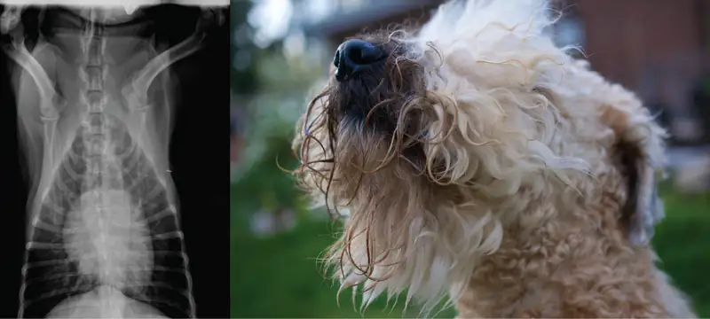
Breathing is an involuntary event. How often a breath is taken and how much air is inhaled or exhaled are tightly regulated by the respiratory center in the brain. Humans, when they aren’t exerting themselves, breathe approximately 15 times per minute on average. Canines, like the dog in Figure 39.1, have a respiratory rate of about 15–30 breaths per minute. With every inhalation, air fills the lungs, and with every exhalation, air rushes back out. That air is doing more than just inflating and deflating the lungs in the chest cavity. The air contains oxygen that crosses the lung tissue, enters the bloodstream, and travels to organs and tissues. Oxygen (O2) enters the cells where it is used for metabolic reactions that produce ATP, a high-energy compound. At the same time, these reactions release carbon dioxide (CO2) as a by-product. CO2is toxic and must be eliminated. Carbon dioxide exits the cells, enters the bloodstream, travels back to the lungs, and is expired out of the body during exhalation.
39.1 Systems of Gas Exchange¶
Learning Objectives
By the end of this section, you will be able to do the following:
- Describe the passage of air from the outside environment to the lungs
- Explain how the lungs are protected from particulate matter
The primary function of the respiratory system is to deliver oxygen to the cells of the body’s tissues and remove carbon dioxide, a cell waste product. The main structures of the human respiratory system are the nasal cavity, the trachea, and lungs.
All aerobic organisms require oxygen to carry out their metabolic functions. Along the evolutionary tree, different organisms have devised different means of obtaining oxygen from the surrounding atmosphere. The environment in which the animal lives greatly determines how an animal respires. The complexity of the respiratory system is correlated with the size of the organism. As animal size increases, diffusion distances increase and the ratio of surface area to volume drops. In unicellular organisms, diffusion across the cell membrane is sufficient for supplying oxygen to the cell (Figure 39.2). Diffusion is a slow, passive transport process. In order for diffusion to be a feasible means of providing oxygen to an animal's body, the rate of diffusion across the body surface must match the rate that oxygen is utilized. In other words, if the body were very large or thick, diffusion would not be able to provide oxygen quickly enough to the cells of the body. Therefore, dependence on diffusion as a means of obtaining oxygen and removing carbon dioxide remains feasible only for small organisms or those with highly-flattened bodies, such as many flatworms (Platyhelminthes). Larger organisms had to evolve specialized respiratory tissues, such as gills, lungs, and respiratory passages accompanied by complex circulatory systems, to transport oxygen throughout their entire body.
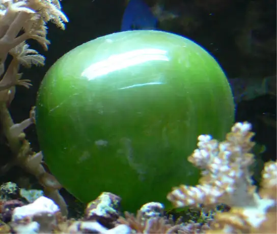
Direct Diffusion¶
For small multicellular organisms, diffusion across the outer membrane is sufficient to meet their oxygen needs. Gas exchange by direct diffusion across surface membranes is efficient for organisms less than 1 mm in diameter. In simple organisms, such as cnidarians and flatworms, every cell in the body is close to the external environment. Their cells are kept moist and gases diffuse quickly via direct diffusion. Flatworms are small, literally flat worms, which ‘breathe’ through diffusion across the outer membrane (Figure 39.3). The flat shape of these organisms increases the surface area for diffusion, ensuring that each cell within the body is close to the outer membrane surface and has access to oxygen. If the flatworm had a cylindrical body, then the cells in the center would not be able to get oxygen.
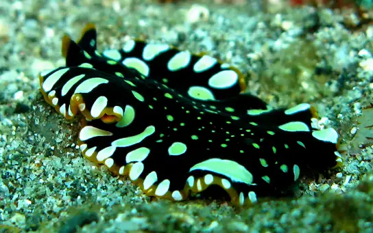
Skin and Gills¶
Earthworms and amphibians use their skin (integument) as a respiratory organ. A dense network of capillaries lies just below the skin and facilitates gas exchange between the external environment and the circulatory system. The respiratory surface must be kept moist in order for the gases to dissolve and diffuse across cell membranes.
Organisms that live in water need to obtain oxygen from the water. Oxygen dissolves in water but at a lower concentration than in the atmosphere. The atmosphere has roughly 21 percent oxygen. In water, the oxygen concentration is much lower than that. Fish and many other aquatic organisms have evolved gills to take up the dissolved oxygen from water (Figure 39.4). Gills are thin tissue filaments that are highly branched and folded. When water passes over the gills, the dissolved oxygen in water rapidly diffuses across the gills into the bloodstream. The circulatory system can then carry the oxygenated blood to the other parts of the body. In animals that contain coelomic fluid instead of blood, oxygen diffuses across the gill surfaces into the coelomic fluid. Gills are found in mollusks, annelids, and crustaceans.
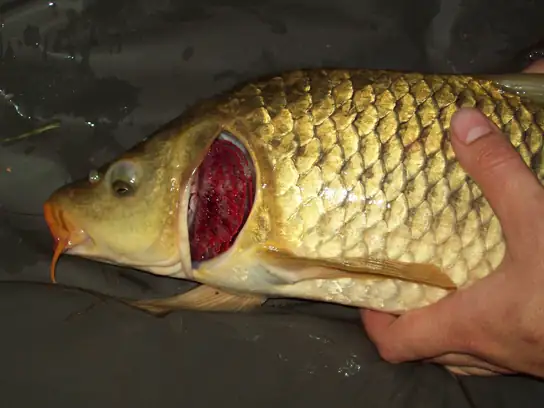
The folded surfaces of the gills provide a large surface area to ensure that the fish gets sufficient oxygen. Diffusion is a process in which material travels from regions of high concentration to low concentration until equilibrium is reached. In this case, blood with a low concentration of oxygen molecules circulates through the gills. The concentration of oxygen molecules in water is higher than the concentration of oxygen molecules in gills. As a result, oxygen molecules diffuse from water (high concentration) to blood (low concentration), as shown in Figure 39.5. Similarly, carbon dioxide molecules in the blood diffuse from the blood (high concentration) to water (low concentration).
![The illustration shows a fish, with a box indicating the location of the gills, behind the head. A close-up image shows the gills, each of which resembles a feathery worm. Two stacks of gills attach to a structure called a columnar gill arch, forming a tall V. Water travels in from the outside of the V, between each gill, then travels out of the top of the V. Arteries from the hearth bring deoxygenated blood into the gill from the base of the gill arch, and arteries travel back out on the opposite side carrying the oxygenated blood toward the organs. A close-up image of a single gill shows that water travels over the gill lamella, passing over arteries with oxygenated blood first, then over the arteries with deoxygenated blood coming from the hearth. A rich capillary network in the lamellae of the gills facilitates the gas exchange.](img/figure-b39-01-04.webp)
Tracheal Systems¶
Insect respiration is independent of its circulatory system; therefore, the blood does not play a direct role in oxygen transport. Insects have a highly specialized type of respiratory system called the tracheal system, which consists of a network of small tubes that carries oxygen to the entire body. The tracheal system is the most direct and efficient respiratory system in active animals. The tubes in the tracheal system are made of a polymeric material called chitin.
Insect bodies have openings, called spiracles, along the thorax and abdomen. These openings connect to the tubular network, allowing oxygen to pass into the body (Figure 39.6) and regulating the diffusion of CO2 and water vapor. Air enters and leaves the tracheal system through the spiracles. Some insects can ventilate the tracheal system with body movements.
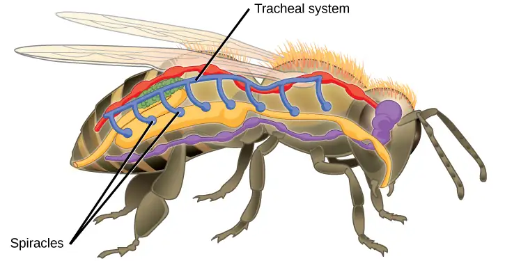
Mammalian Systems¶
In mammals, pulmonary ventilation occurs via inhalation (breathing). During inhalation, air enters the body through the nasal cavity located just inside the nose (Figure 39.7). As air passes through the nasal cavity, the air is warmed to body temperature and humidified. The respiratory tract is coated with mucus to seal the tissues from direct contact with air. Mucus is high in water. As air crosses these surfaces of the mucous membranes, it picks up water. These processes help equilibrate the air to the body conditions, reducing any damage that cold, dry air can cause. Particulate matter that is floating in the air is removed in the nasal passages via mucus and cilia. The processes of warming, humidifying, and removing particles are important protective mechanisms that prevent damage to the trachea and lungs. Thus, inhalation serves several purposes in addition to bringing oxygen into the respiratory system.
Visual Connection
![The illustration shows the flow of air through the human respiratory system. The nasal cavity is a wide cavity above and behind the nostrils, and the pharynx is the passageway behind the mouth. The nasal cavity and pharynx join and enter the trachea through the larynx. The larynx is somewhat wider than the trachea and flat. The trachea has concentric, ring-like grooves, giving it a bumpy appearance. The trachea bifurcates into two primary bronchi, which are also grooved. The primary bronchi enter the lungs, and branch into secondary bronchi. The secondary bronchi in turn branch into many tertiary bronchi. The tertiary bronchi branch into bronchioles, which branch into terminal bronchioles. Each terminal bronchiole ends in an alveolar sac. Each alveolar sac contains many alveoli clustered together, like bunches of grapes. The alveolar duct is the air passage into the alveolar sac. The alveoli are hollow, and air empties into them. Pulmonary arteries bring deoxygenated blood to the alveolar sac (and thus appear blue), and pulmonary veins return oxygenated blood (and thus appear red) to the heart. Capillaries form a web around each alveolus. The diaphragm is a membrane that pushes up against the lungs.](img/figure-b39-01-06.webp)
Which of the following statements about the mammalian respiratory system is false?
- When we breathe in, air travels from the pharynx to the trachea.
- The bronchioles branch into bronchi.
- Alveolar ducts connect to alveolar sacs.
- Gas exchange between the lung and blood takes place in the alveolus.
From the nasal cavity, air passes through the pharynx (throat) and the larynx (voice box), as it makes its way to the trachea (Figure 39.7). The main function of the trachea is to funnel the inhaled air to the lungs and the exhaled air back out of the body. The human trachea is a cylinder about 10 to 12 cm long and 2 cm in diameter that sits in front of the esophagus and extends from the larynx into the chest cavity where it divides into the two primary bronchi at the midthorax. It is made of incomplete rings of hyaline cartilage and smooth muscle (Figure 39.8). The trachea is lined with mucus-producing goblet cells and ciliated epithelia. The cilia propel foreign particles trapped in the mucus toward the pharynx. The cartilage provides strength and support to the trachea to keep the passage open. The smooth muscle can contract, decreasing the trachea’s diameter, which causes expired air to rush upwards from the lungs at a great force. The forced exhalation helps expel mucus when we cough. Smooth muscle can contract or relax, depending on stimuli from the external environment or the body’s nervous system.
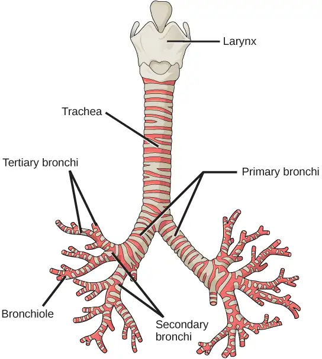
Lungs: Bronchi and Alveoli¶
The end of the trachea bifurcates (divides) to the right and left lungs. The lungs are not identical. The right lung is larger and contains three lobes, whereas the smaller left lung contains two lobes (Figure 39.9). The muscular diaphragm, which facilitates breathing, is inferior to (below) the lungs and marks the end of the thoracic cavity.
![The illustration shows the trachea, which starts at the top of the neck and continues down into the chest, where it branches into the bronchi, which enter the lungs. The left lung has two lobes. The upper lobe is located in front of and above the lower lobe. The right lung has three lobes. The upper lobe is on the top, the lower lobe is on the bottom, and the middle lobe is sandwiched between them. The diaphragm presses against the bottom of the lungs and has the appearance of skin stretched over the top of a drum. Wide flaps of the diaphragm extend downward on the front left and right sides of the body. On the back, thin flaps of diaphragm stretch downward on either side of the spine.](img/figure-b39-01-08.webp)
In the lungs, air is diverted into smaller and smaller passages, or bronchi. Air enters the lungs through the two primary (main) bronchi (singular: bronchus). Each bronchus divides into secondary bronchi, then into tertiary bronchi, which in turn divide, creating smaller and smaller diameter bronchioles as they split and spread through the lung. Like the trachea, the bronchi are made of cartilage and smooth muscle. At the bronchioles, the cartilage is replaced with elastic fibers. Bronchi are innervated by nerves of both the parasympathetic and sympathetic nervous systems that control muscle contraction (parasympathetic) or relaxation (sympathetic) in the bronchi and bronchioles, depending on the nervous system’s cues. In humans, bronchioles with a diameter smaller than 0.5 mm are the respiratory bronchioles. They lack cartilage and therefore rely on inhaled air to support their shape. As the passageways decrease in diameter, the relative amount of smooth muscle increases.
The terminal bronchioles subdivide into microscopic branches called respiratory bronchioles. The respiratory bronchioles subdivide into several alveolar ducts. Numerous alveoli and alveolar sacs surround the alveolar ducts. The alveolar sacs resemble bunches of grapes tethered to the end of the bronchioles (Figure 39.10). In the acinar region, the alveolar ducts are attached to the end of each bronchiole. At the end of each duct are approximately 100 alveolar sacs, each containing 20 to 30 alveoli that are 200 to 300 microns in diameter. Gas exchange occurs only in alveoli. Alveoli are made of thin-walled parenchymal cells, typically one-cell thick, that look like tiny bubbles within the sacs. Alveoli are in direct contact with capillaries (one-cell thick) of the circulatory system. Such intimate contact ensures that oxygen will diffuse from alveoli into the blood and be distributed to the cells of the body. In addition, the carbon dioxide that was produced by cells as a waste product will diffuse from the blood into alveoli to be exhaled. The anatomical arrangement of capillaries and alveoli emphasizes the structural and functional relationship of the respiratory and circulatory systems. Because there are so many alveoli (~300 million per lung) within each alveolar sac and so many sacs at the end of each alveolar duct, the lungs have a sponge-like consistency. This organization produces a very large surface area that is available for gas exchange. The surface area of alveoli in the lungs is approximately 75 m2. This large surface area, combined with the thin-walled nature of the alveolar parenchymal cells, allows gases to easily diffuse across the cells.
![The illustration shows a terminal bronchial tube branching into three alveolar ducts. At the end of each duct is an alveolar sac made up of 20 to 30 alveoli clustered together, like grapes. The airspace in the middle of the alveolar sac, called the atrium, is continuous with the air space inside the alveolus so that air can circulate from the atrium to the alveolus. Capillaries surround each alveolus, and this is where gas exchange occurs. A pulmonary artery (shown in blue) runs along the terminal bronchiole, bringing deoxygenated blood from the heart to the alveoli. A pulmonary vein (shown in red) running along the bronchiole brings oxygenated blood back to the heart. Small, flat mucous glands are associated with the outside of the bronchial tubes.](img/figure-39-01-09.webp)
Interactive
Watch the following video to review the respiratory system. lungs_pulmonary
Protective Mechanisms¶
The air that organisms breathe contains particulate matter such as dust, dirt, viral particles, and bacteria that can damage the lungs or trigger allergic immune responses. The respiratory system contains several protective mechanisms to avoid problems or tissue damage. In the nasal cavity, hairs and mucus trap small particles, viruses, bacteria, dust, and dirt to prevent their entry.
If particulates do make it beyond the nose, or enter through the mouth, the bronchi and bronchioles of the lungs also contain several protective devices. The lungs produce mucus—a sticky substance made of mucin, a complex glycoprotein, as well as salts and water—that traps particulates. The bronchi and bronchioles contain cilia, small hair-like projections that line the walls of the bronchi and bronchioles (Figure 39.11). These cilia beat in unison and move mucus and particles out of the bronchi and bronchioles back up to the throat where it is swallowed and eliminated via the esophagus.
In humans, for example, tar and other substances in cigarette smoke destroy or paralyze the cilia, making the removal of particles more difficult. In addition, smoking causes the lungs to produce more mucus, which the damaged cilia are not able to move. This causes a persistent cough, as the lungs try to rid themselves of particulate matter, and makes smokers more susceptible to respiratory ailments.
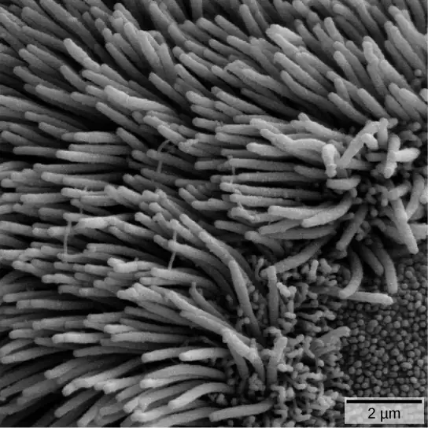
39.2 Gas Exchange across Respiratory Surfaces¶
Learning Objectives
By the end of this section, you will be able to do the following:
- Name and describe lung volumes and capacities
- Understand how gas pressure influences how gases move into and out of the body
The structure of the lung maximizes its surface area to increase gas diffusion. Because of the enormous number of alveoli (approximately 300 million in each human lung), the surface area of the lung is very large (75 m2). Having such a large surface area increases the amount of gas that can diffuse into and out of the lungs.
Basic Principles of Gas Exchange¶
Gas exchange during respiration occurs primarily through diffusion. Diffusion is a process in which transport is driven by a concentration gradient. Gas molecules move from a region of high concentration to a region of low concentration. Blood that is low in oxygen concentration and high in carbon dioxide concentration undergoes gas exchange with air in the lungs. The air in the lungs has a higher concentration of oxygen than that of oxygen-depleted blood and a lower concentration of carbon dioxide. This concentration gradient allows for gas exchange during respiration.
Partial pressure is a measure of the concentration of the individual components in a mixture of gases. The total pressure exerted by the mixture is the sum of the partial pressures of the components in the mixture. The rate of diffusion of a gas is proportional to its partial pressure within the total gas mixture. This concept is discussed further in detail below.
Lung Volumes and Capacities¶
Different animals have different lung capacities based on their activities. Cheetahs have evolved a much higher lung capacity than humans; it helps provide oxygen to all the muscles in the body and allows them to run very fast. Elephants also have a high lung capacity. In this case, it is not because they run fast but because they have a large body and must be able to take up oxygen in accordance with their body size.
Human lung size is determined by genetics, sex, and height. At maximal capacity, the average adult male's lungs can hold almost six liters of air, but lungs do not usually operate at maximal capacity. Air in the lungs is measured in terms of lung volumes and lung capacities (Figure 39.12 and Table 39.1). Volume measures the amount of air for one function (such as inhalation or exhalation). Capacity is any two or more volumes (for example, how much can be inhaled from the end of a maximal exhalation).
![The chart shows the exchange of air during inhalation and exhalation, which resembles a wave pattern. During normal breathing, only about eight percent of air in the lungs is exchanged, and the amount of air in the lungs is one-half the total lung capacity. When a person breathes in deeply, total lung capacity is attained. The amount of air taken in is called the inspiratory capacity. Forceful exhalation results in expulsion of the expiratory reserve volume. A residual volume of air of about eight percent is left in the lungs. The vital capacity is the difference between the total lung capacity and the residual volume. The inspiratory reserve volume is the difference between the total lung capacity and the amount of air in the lungs after taking a normal breath. The functional residual capacity is the amount of air in the lungs after normal exhalation.](img/figure-39-02-01.webp)
Table 39.1
| Lung Volumes and Capacities (Avg Adult Male) | |||
|---|---|---|---|
| Volume/Capacity | Definition | Volume (liters) | Equations |
| Tidal volume (TV) | Amount of air inhaled during a normal breath | 0.5 | - |
| Expiratory reserve volume (ERV) | Amount of air that can be exhaled after a normal exhalation | 1.2 | - |
| Inspiratory reserve volume (IRV) | Amount of air that can be further inhaled after a normal inhalation | 3.1 | - |
| Residual volume (RV) | Air left in the lungs after a forced exhalation | 1.2 | - |
| Vital capacity (VC) | Maximum amount of air that can be moved in or out of the lungs in a single respiratory cycle | 4.8 | ERV+TV+IRV |
| Inspiratory capacity (IC) | Volume of air that can be inhaled after a normal exhalation | 3.6 | TV+IRV |
| Functional residual capacity (FRC) | Volume of air remaining after a normal exhalation | 2.4 | ERV+RV |
| Total lung capacity (TLC) | Total volume of air in the lungs after a maximal inspiration | 6.0 | RV+ERV+TV+IRV |
| Forced expiratory volume (FEV1) | How much air can be forced out of the lungs over a specific time period, usually one second | ~4.1 to 5.5 | - |
The volume in the lungs can be divided into four units: tidal volume, expiratory reserve volume, inspiratory reserve volume, and residual volume. Tidal volume (TV) measures the amount of air that is inspired and expired during a normal breath. On average, this volume is around one-half liter, which is a little less than the capacity of a 20-ounce drink bottle. The expiratory reserve volume (ERV) is the additional amount of air that can be exhaled after a normal exhalation. It is the reserve amount that can be exhaled beyond what is normal. Conversely, the inspiratory reserve volume (IRV) is the additional amount of air that can be inhaled after a normal inhalation. The residual volume (RV) is the amount of air that is left after expiratory reserve volume is exhaled. The lungs are never completely empty: There is always some air left in the lungs after a maximal exhalation. If this residual volume did not exist and the lungs emptied completely, the lung tissues would stick together and the energy necessary to reinflate the lung could be too great to overcome. Therefore, there is always some air remaining in the lungs. Residual volume is also important for preventing large fluctuations in respiratory gases (O2 and CO2). The residual volume is the only lung volume that cannot be measured directly because it is impossible to completely empty the lungs of air. This volume can only be calculated rather than measured.
Capacities are measurements of two or more volumes. The vital capacity (VC) measures the maximum amount of air that can be inhaled or exhaled during a respiratory cycle. It is the sum of the expiratory reserve volume, tidal volume, and inspiratory reserve volume. The inspiratory capacity (IC) is the amount of air that can be inhaled after the end of a normal expiration. It is, therefore, the sum of the tidal volume and inspiratory reserve volume. The functional residual capacity (FRC) is the volume of air remaining after a normal exhalation (sum of the ERV and RV), which includes the expiratory reserve volume and the residual volume. The FRC measures the amount of additional air that can be exhaled after a normal exhalation. Lastly, the total lung capacity (TLC) is a measurement of the total amount of air that the lungs can hold. It is the sum of the residual volume, expiratory reserve volume, tidal volume, and inspiratory reserve volume.
Lung volumes are measured by a technique called spirometry. An important measurement taken during spirometry is the forced expiratory volume (FEV), which measures how much air can be forced out of the lung over a specific period, usually one second (FEV1). In addition, the forced vital capacity (FVC), which is the total amount of air that can be forcibly exhaled, is measured. The ratio of these values (FEV1/FVC ratio) is used to diagnose lung diseases including asthma, emphysema, and fibrosis. If the FEV1/FVC ratio is high, the lungs are not compliant (meaning they are stiff and unable to bend properly), and the patient most likely has lung fibrosis. Patients exhale most of the lung volume very quickly. Conversely, when the FEV1/FVC ratio is low, there is resistance in the lung that is characteristic of asthma. In this instance, it is hard for the patient to get the air out of their lungs, and it takes a long time to reach the maximal exhalation volume. In either case, breathing is difficult and complications arise.
Career Connection: Respiratory Therapist
Respiratory therapists or respiratory practitioners evaluate and treat patients with lung and cardiovascular diseases. They work as part of a medical team to develop treatment plans for patients. Respiratory therapists may treat premature babies with underdeveloped lungs, patients with chronic conditions such as asthma, or older patients suffering from lung disease such as emphysema and chronic obstructive pulmonary disease (COPD). They may operate advanced equipment such as compressed gas delivery systems, ventilators, blood gas analyzers, and resuscitators. Specialized programs to become a respiratory therapist generally lead to a bachelor’s degree with a respiratory therapist specialty. Because of a growing aging population, career opportunities as a respiratory therapist are expected to remain strong.
Gas Pressure and Respiration¶
The respiratory process can be better understood by examining the properties of gases. Gases move freely, but gas particles are constantly hitting the walls of their vessel, thereby producing gas pressure.
Air is a mixture of gases, primarily nitrogen (N2; 78.6 percent), oxygen (O2; 20.9 percent), water vapor (H2O; 0.5 percent), and carbon dioxide (CO2; 0.04 percent). Each gas component of that mixture exerts a pressure. The pressure for an individual gas in the mixture is the partial pressure of that gas. Approximately 21 percent of atmospheric gas is oxygen. Carbon dioxide, however, is found in relatively small amounts, 0.04 percent. The partial pressure for oxygen is much greater than that of carbon dioxide. The partial pressure of any gas can be calculated by:
Patm, the atmospheric pressure, is the sum of all of the partial pressures of the atmospheric gases added together,
The pressure of the atmosphere at sea level is 760 mm Hg. Therefore, the partial pressure of oxygen is:
and for carbon dioxide:
At high altitudes, Patm decreases but concentration does not change; the partial pressure decrease is due to the reduction in Patm.
When the air mixture reaches the lung, it has been humidified. The pressure of the water vapor in the lung does not change the pressure of the air, but it must be included in the partial pressure equation. For this calculation, the water pressure (47 mm Hg) is subtracted from the atmospheric pressure:
and the partial pressure of oxygen is:
These pressures determine the gas exchange, or the flow of gas, in the system. Oxygen and carbon dioxide will flow according to their pressure gradient from high to low. Therefore, understanding the partial pressure of each gas will aid in understanding how gases move in the respiratory system.
Gas Exchange across the Alveoli¶
In the body, oxygen is used by cells of the body’s tissues and carbon dioxide is produced as a waste product. The ratio of carbon dioxide production to oxygen consumption is the respiratory quotient (RQ). RQ varies between 0.7 and 1.0. If just glucose were used to fuel the body, the RQ would equal one. One mole of carbon dioxide would be produced for every mole of oxygen consumed. Glucose, however, is not the only fuel for the body. Protein and fat are also used as fuels for the body. Because of this, less carbon dioxide is produced than oxygen is consumed and the RQ is, on average, about 0.7 for fat and about 0.8 for protein.
The RQ is used to calculate the partial pressure of oxygen in the alveolar spaces within the lung, the alveolar \(\text{P}_{\text{O}_{2}}\) . Above, the partial pressure of oxygen in the lungs was calculated to be 150 mm Hg. However, lungs never fully deflate with an exhalation; therefore, the inspired air mixes with this residual air and lowers the partial pressure of oxygen within the alveoli. This means that there is a lower concentration of oxygen in the lungs than is found in the air outside the body. Knowing the RQ, the partial pressure of oxygen in the alveoli can be calculated:
With an RQ of 0.8 and a \(\text{P}_{\text{CO}_{2}}\) in the alveoli of 40 mm Hg, the alveolar \(\text{P}_{\text{O}_{2}}\) is equal to:
Notice that this pressure is less than the external air. However, it is still greater than the partial pressure of oxygen in blood as it enters the lungs, so the oxygen will flow from the inspired air in the alveoli (\(\text{P}_{\text{O}_{2}}\) = 100 mm Hg) into the bloodstream (\(\text{P}_{\text{O}_{2}}\) = 140 mm Hg) (Figure 39.13).
In the lungs, oxygen diffuses out of the alveoli and into the capillaries surrounding the alveoli. Oxygen (about 98 percent) binds reversibly to the respiratory pigment hemoglobin found in red blood cells (RBCs). RBCs carry oxygen to the tissues where oxygen dissociates from the hemoglobin and diffuses into the cells of the tissues. More specifically, alveolar \(\text{P}_{\text{O}_{2}}\) is higher in the alveoli (\(\text{P}_{\text{ALVO}_{2}}\) = 100 mm Hg) than blood \(\text{P}_{\text{O}_{2}}\) (40 mm Hg) in the capillaries. Because this pressure gradient exists, oxygen diffuses down its pressure gradient, moving out of the alveoli and entering the blood of the capillaries where O2 binds to hemoglobin. At the same time, alveolar \(\text{P}_{\text{CO}_{2}}\) is lower \(\text{P}_{\text{ALVCO}_{2}}\) = 40 mm Hg than blood \(\text{P}_{\text{CO}_{2}}\) = (45 mm Hg). CO2 diffuses down its pressure gradient, moving out of the capillaries and entering the alveoli.
Oxygen and carbon dioxide move independently of each other; they diffuse down their own pressure gradients. As blood leaves the lungs through the pulmonary veins, the venous \(\text{P}_{\text{O}_{2}}\)= 100 mm Hg, whereas the venous \(\text{P}_{\text{CO}_{2}}\) = 40 mm Hg. As blood enters the systemic capillaries, the blood will lose oxygen and gain carbon dioxide because of the pressure difference of the tissues and blood. In systemic capillaries, \(\text{P}_{\text{O}_{2}}\)= 100 mm Hg, but in the tissue cells, \(\text{P}_{\text{O}_{2}}\)= 40 mm Hg. This pressure gradient drives the diffusion of oxygen out of the capillaries and into the tissue cells. At the same time, blood \(\text{P}_{\text{CO}_{2}}\)= 40 mm Hg and systemic tissue \(\text{P}_{\text{CO}_{2}}\)= 45 mm Hg. The pressure gradient drives CO2 out of tissue cells and into the capillaries. The blood returning to the lungs through the pulmonary arteries has a venous \(\text{P}_{\text{O}_{2}}\)= 40 mm Hg and a \(\text{P}_{\text{CO}_{2}}\)= 45 mm Hg. The blood enters the lung capillaries where the process of exchanging gases between the capillaries and alveoli begins again (Figure 39.13).
Visual Connection
![The illustration shows the movement of deoxygenated air into the lungs, and oxygenated air out of the lungs. Also shown is the circulation of blood through the body. Circulation begins when deoxygenated blood in arteries leaves the right side of the heart and enters the lungs. Oxygenated blood exits the lungs, and enters the left side of the heart, which pumps it to the rest of the body via arteries. The partial pressure of oxygen in the atmosphere is 160 millimeters of mercury, and the partial pressure of carbon dioxide is 0.2 millimeters of mercury. The partial pressure of oxygen in the arteries is 100 millimeters of mercury, and the partial pressure of carbon dioxide is 40 millimeters of mercury. The partial pressure of oxygen in the veins is 40 millimeters of mercury, and the partial pressure of carbon dioxide is 46 millimeters of mercury.](img/figure-b39-02-02.webp)
Which of the following statements is false?
- In the tissues, \(\text{P}_{\text{O}_{2}}\) drops as blood passes from the arteries to the veins, while \(\text{P}_{\text{CO}_{2}}\) increases.
- Blood travels from the lungs to the heart to body tissues, then back to the heart, then the lungs.
- Blood travels from the lungs to the heart to body tissues, then back to the lungs, then the heart.
- \(\text{P}_{\text{O}_{2}}\) is higher in air than in the lungs.
In short, the change in partial pressure from the alveoli to the capillaries drives the oxygen into the tissues and the carbon dioxide into the blood from the tissues. The blood is then transported to the lungs where differences in pressure in the alveoli result in the movement of carbon dioxide out of the blood into the lungs, and oxygen into the blood.
Interactive
Watch this video to learn how to carry out spirometry. spirometry
39.3 Breathing¶
Learning Objectives
By the end of this section, you will be able to do the following:
- Describe how the structures of the lungs and thoracic cavity control the mechanics of breathing
- Explain the importance of compliance and resistance in the lungs
- Discuss problems that may arise due to a V/Q mismatch
Mammalian lungs are located in the thoracic cavity where they are surrounded and protected by the rib cage, intercostal muscles, and bound by the chest wall. The bottom of the lungs is contained by the diaphragm, a skeletal muscle that facilitates breathing. Breathing requires the coordination of the lungs, the chest wall, and most importantly, the diaphragm.
Types of Breathing¶
Amphibians have evolved multiple ways of breathing. Young amphibians, like tadpoles, use gills to breathe, and they don’t leave the water. Some amphibians retain gills for life. As the tadpole grows, the gills disappear and lungs grow. These lungs are primitive and not as evolved as mammalian lungs. Adult amphibians are lacking or have a reduced diaphragm, so breathing via lungs is forced. The other means of breathing for amphibians is diffusion across the skin. To aid this diffusion, amphibian skin must remain moist.
Birds face a unique challenge with respect to breathing: They fly. Flying consumes a great amount of energy; therefore, birds require a lot of oxygen to aid their metabolic processes. Birds have evolved a respiratory system that supplies them with the oxygen needed to enable flying. Similar to mammals, birds have lungs, which are organs specialized for gas exchange. Oxygenated air, taken in during inhalation, diffuses across the surface of the lungs into the bloodstream, and carbon dioxide diffuses from the blood into the lungs and expelled during exhalation. The details of breathing between birds and mammals differ substantially.
In addition to lungs, birds have air sacs inside their body. Air flows in one direction from the posterior air sacs to the lungs and out of the anterior air sacs. The flow of air is in the opposite direction from blood flow, and gas exchange takes place much more efficiently. This type of breathing enables birds to obtain the requisite oxygen, even at higher altitudes where the oxygen concentration is low. This directionality of airflow requires two cycles of air intake and exhalation to completely get the air out of the lungs.
Evolution Connection: Avian Respiration
Birds have evolved a respiratory system that enables them to fly. Flying is a high-energy process and requires a lot of oxygen. Furthermore, many birds fly in high altitudes where the concentration of oxygen is low. How did birds evolve a respiratory system that is so unique?
Decades of research by paleontologists have shown that birds evolved from therapods, meat-eating dinosaurs (Figure 39.14). In fact, fossil evidence shows that meat-eating dinosaurs that lived more than 100 million years ago had a similar flow-through respiratory system with lungs and air sacs. Archaeopteryx and Xiaotingia, for example, were flying dinosaurs and are believed to be early precursors of birds.
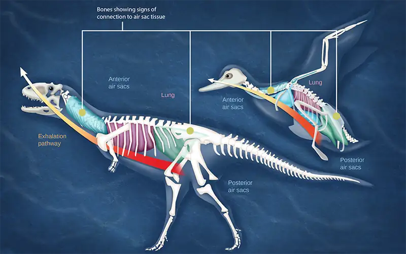
Most of us consider that dinosaurs are extinct. However, modern birds are descendants of avian dinosaurs. The respiratory system of modern birds has been evolving for hundreds of millions of years.
All mammals have lungs that are the main organs for breathing. Lung capacity has evolved to support the animal’s activities. During inhalation, the lungs expand with air, and oxygen diffuses across the lung’s surface and enters the bloodstream. During exhalation, the lungs expel air and lung volume decreases. In the next few sections, the process of human breathing will be explained.
The Mechanics of Human Breathing¶
Boyle’s Law is the gas law that states that in a closed space, pressure and volume are inversely related. As volume decreases, pressure increases and vice versa (Figure 39.15). The relationship between gas pressure and volume helps to explain the mechanics of breathing.
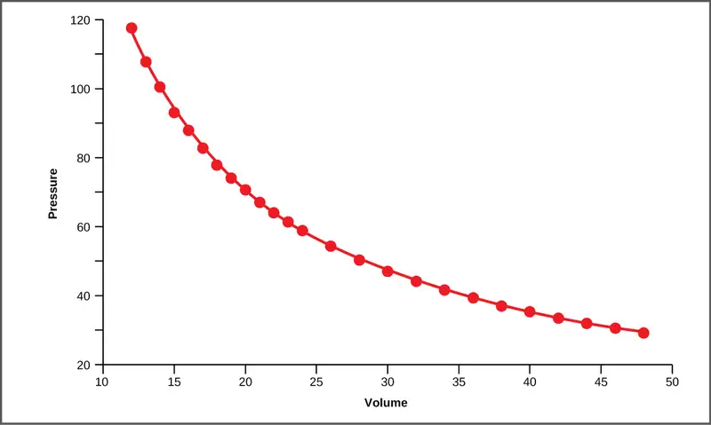
There is always a slightly negative pressure within the thoracic cavity, which aids in keeping the airways of the lungs open. During inhalation, volume increases as a result of contraction of the diaphragm, and pressure decreases (according to Boyle’s Law). This decrease of pressure in the thoracic cavity relative to the environment makes the cavity less than the atmosphere (Figure 39.16a). Because of this drop in pressure, air rushes into the respiratory passages. To increase the volume of the lungs, the chest wall expands. This results from the contraction of the intercostal muscles, the muscles that are connected to the rib cage. Lung volume expands because the diaphragm contracts and the intercostal muscles contract, thus expanding the thoracic cavity. This increase in the volume of the thoracic cavity lowers pressure compared to the atmosphere, so air rushes into the lungs, thus increasing its volume. The resulting increase in volume is largely attributed to an increase in alveolar space, because the bronchioles and bronchi are stiff structures that do not change in size.
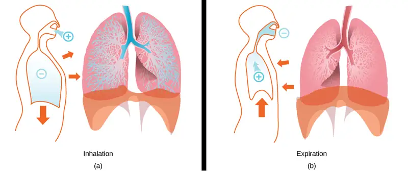
The chest wall expands out and away from the lungs. The lungs are elastic; therefore, when air fills the lungs, the elastic recoil within the tissues of the lung exerts pressure back toward the interior of the lungs. These outward and inward forces compete to inflate and deflate the lung with every breath. Upon exhalation, the lungs recoil to force the air out of the lungs, and the intercostal muscles relax, returning the chest wall back to its original position (Figure 39.16b). The diaphragm also relaxes and moves higher into the thoracic cavity. This increases the pressure within the thoracic cavity relative to the environment, and air rushes out of the lungs. The movement of air out of the lungs is a passive event. No muscles are contracting to expel the air.
Each lung is surrounded by an invaginated sac. The layer of tissue that covers the lung and dips into spaces is called the visceral pleura. A second layer of parietal pleura lines the interior of the thorax (Figure 39.17). The space between these layers, the intrapleural space, contains a small amount of fluid that protects the tissue and reduces the friction generated from rubbing the tissue layers together as the lungs contract and relax. Pleurisy results when these layers of tissue become inflamed; it is painful because the inflammation increases the pressure within the thoracic cavity and reduces the volume of the lung.
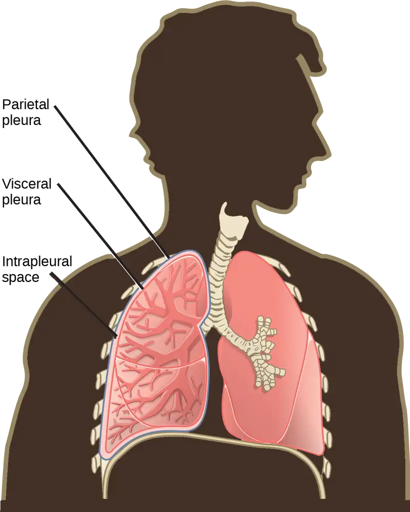
Interactive
View how Boyle’s Law is related to breathing and watch a video on Boyle’s Law. boyle_breathing
The Work of Breathing¶
The number of breaths per minute is the respiratory rate. On average, under non-exertion conditions, the human respiratory rate is 12–15 breaths/minute. The respiratory rate contributes to the alveolar ventilation, or how much air moves into and out of the alveoli. Alveolar ventilation prevents carbon dioxide buildup in the alveoli. There are two ways to keep the alveolar ventilation constant: increase the respiratory rate while decreasing the tidal volume of air per breath (shallow breathing), or decrease the respiratory rate while increasing the tidal volume per breath. In either case, the ventilation remains the same, but the work done and type of work needed are quite different. Both tidal volume and respiratory rate are closely regulated when oxygen demand increases.
There are two types of work conducted during respiration, flow-resistive and elastic work. Flow-resistive refers to the work of the alveoli and tissues in the lung, whereas elastic work refers to the work of the intercostal muscles, chest wall, and diaphragm. Increasing the respiration rate increases the flow-resistive work of the airways and decreases the elastic work of the muscles. Decreasing the respiratory rate reverses the type of work required.
Surfactant¶
The air-tissue/water interface of the alveoli has a high surface tension. This surface tension is similar to the surface tension of water at the liquid-air interface of a water droplet that results in the bonding of the water molecules together. Surfactant is a complex mixture of phospholipids and lipoproteins that works to reduce the surface tension that exists between the alveoli tissue and the air found within the alveoli. By lowering the surface tension of the alveolar fluid, it reduces the tendency of alveoli to collapse.
Surfactant works like a detergent to reduce the surface tension and allows for easier inflation of the airways. When a balloon is first inflated, it takes a large amount of effort to stretch the plastic and start to inflate the balloon. If a little bit of detergent was applied to the interior of the balloon, then the amount of effort or work needed to begin to inflate the balloon would decrease, and it would become much easier to start blowing up the balloon. This same principle applies to the airways. A small amount of surfactant to the airway tissues reduces the effort or work needed to inflate those airways. Babies born prematurely sometimes do not produce enough surfactant. As a result, they suffer from respiratory distress syndrome, because it requires more effort to inflate their lungs. Surfactant is also important for preventing collapse of small alveoli relative to large alveoli.
Lung Resistance and Compliance¶
Pulmonary diseases reduce the rate of gas exchange into and out of the lungs. Two main causes of decreased gas exchange are compliance (how elastic the lung is) and resistance (how much obstruction exists in the airways). A change in either can dramatically alter breathing and the ability to take in oxygen and release carbon dioxide.
Examples of restrictive diseases are respiratory distress syndrome and pulmonary fibrosis. In both diseases, the airways are less compliant and they are stiff or fibrotic. There is a decrease in compliance because the lung tissue cannot bend and move. In these types of restrictive diseases, the intrapleural pressure is more positive and the airways collapse upon exhalation, which traps air in the lungs. Forced or functional vital capacity (FVC), which is the amount of air that can be forcibly exhaled after taking the deepest breath possible, is much lower than in normal patients, and the time it takes to exhale most of the air is greatly prolonged (Figure 39.18). A patient suffering from these diseases cannot exhale the normal amount of air.
Obstructive diseases and conditions include emphysema, asthma, and pulmonary edema. In emphysema, which mostly arises from smoking tobacco, the walls of the alveoli are destroyed, decreasing the surface area for gas exchange. The overall compliance of the lungs is increased, because as the alveolar walls are damaged, lung elastic recoil decreases due to a loss of elastic fibers, and more air is trapped in the lungs at the end of exhalation. Asthma is a disease in which inflammation is triggered by environmental factors. Inflammation obstructs the airways. The obstruction may be due to edema (fluid accumulation), smooth muscle spasms in the walls of the bronchioles, increased mucus secretion, damage to the epithelia of the airways, or a combination of these events. Those with asthma or edema experience increased occlusion from increased inflammation of the airways. This tends to block the airways, preventing the proper movement of gases (Figure 39.18). Those with obstructive diseases have large volumes of air trapped after exhalation and breathe at a very high lung volume to compensate for the lack of airway recruitment.
![The graph plots volume exhaled versus time. In normal lungs, almost all of the air can be forcibly exhaled within one second after taking a deep breath, resulting in a curve that rises steeply at first then plateaus shortly after one second. The volume after 1 second is the F E V 1, and it is almost as high as the volume at which the plateau is reached, which is the F V C. In lungs of persons with restrictive lung disease, the F V C is considerably lower but the person can exhale reasonably fast, resulting in a curve that is similar in shape, but with a lower plateau, or F V C, than for normal lungs. The F E V 1 value is still a significant proportion of the F V C value. In lungs of persons with obstructive lung disease, the F V C is low and exhalation is much slower, resulting in a flatter curve with a lower plateau. The slower exhalation results in a F E V 1 value much lower than the F V C value.](img/figure-39-03-05f.webp)
Dead Space: V/Q Mismatch¶
Pulmonary circulation pressure is very low compared to that of the systemic circulation. It is also independent of cardiac output. This is because of a phenomenon called recruitment, which is the process of opening airways that normally remain closed when cardiac output increases. As cardiac output increases, the number of capillaries and arteries that are perfused (filled with blood) increases. These capillaries and arteries are not always in use but are ready if needed. At times, however, there is a mismatch between the amount of air (ventilation, V) and the amount of blood (perfusion, Q) in the lungs. This is referred to as ventilation/perfusion (V/Q) mismatch.
There are two types of V/Q mismatch. Both produce dead space, regions of broken down or blocked lung tissue. Dead spaces can severely impact breathing, because they reduce the surface area available for gas diffusion. As a result, the amount of oxygen in the blood decreases, whereas the carbon dioxide level increases. Dead space is created when no ventilation and/or perfusion takes place. Anatomical dead space or anatomical shunt, arises from an anatomical failure, while physiological dead space or physiological shunt, arises from a functional impairment of the lung or arteries.
An example of an anatomical shunt is the effect of gravity on the lungs. The lung is particularly susceptible to changes in the magnitude and direction of gravitational forces. When someone is standing or sitting upright, the pleural pressure gradient leads to increased ventilation further down in the lung. As a result, the intrapleural pressure is more negative at the base of the lung than at the top, and more air fills the bottom of the lung than the top. Likewise, it takes less energy to pump blood to the bottom of the lung than to the top when in a prone position. Perfusion of the lung is not uniform while standing or sitting. This is a result of hydrostatic forces combined with the effect of airway pressure. An anatomical shunt develops because the ventilation of the airways does not match the perfusion of the arteries surrounding those airways. As a result, the rate of gas exchange is reduced. Note that this does not occur when lying down, because in this position, gravity does not preferentially pull the bottom of the lung down.
A physiological shunt can develop if there is infection or edema in the lung that obstructs an area. This will decrease ventilation but not affect perfusion; therefore, the V/Q ratio changes and gas exchange is affected.
The lung can compensate for these mismatches in ventilation and perfusion. If ventilation is greater than perfusion, the arterioles (small arterial blood vessels) dilate and the bronchioles constrict. This increases perfusion and reduces ventilation. Likewise, if ventilation is less than perfusion, the arterioles constrict and the bronchioles dilate to correct the imbalance.
Interactive
View the mechanics of breathing.
breathing
39.4 Transport of Gases in Human Bodily Fluids¶
Learning Objectives
By the end of this section, you will be able to do the following:
- Describe how oxygen is bound to hemoglobin and transported to body tissues
- Explain how carbon dioxide is transported from body tissues to the lungs
Once the oxygen diffuses across the alveoli, it enters the bloodstream and is transported to the tissues where it is unloaded, and carbon dioxide diffuses out of the blood and into the alveoli to be expelled from the body. Although gas exchange is a continuous process, the oxygen and carbon dioxide are transported by different mechanisms.
Transport of Oxygen in the Blood¶
Although oxygen dissolves in blood, only a small amount of oxygen is transported this way. Only 1.5 percent of oxygen in the blood is dissolved directly into the blood itself. Most oxygen—98.5 percent—is bound to a protein called hemoglobin and carried to the tissues.
Hemoglobin¶
Hemoglobin, or Hb, is a protein molecule found in red blood cells (erythrocytes) made of four subunits: two alpha subunits and two beta subunits (Figure 39.19). Each subunit surrounds a central heme group that contains iron and binds one oxygen molecule, allowing each hemoglobin molecule to bind four oxygen molecules. Molecules with more oxygen bound to the heme groups are brighter red. As a result, oxygenated arterial blood where the Hb is carrying four oxygen molecules is bright red, while venous blood that is deoxygenated is darker red.
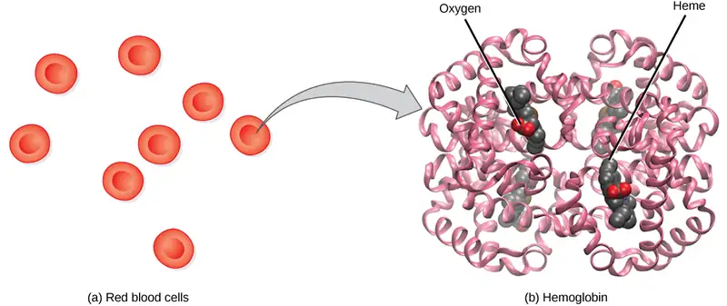
It is easier to bind a second and third oxygen molecule to Hb than the first molecule. This is because the hemoglobin molecule changes its shape, or conformation, as oxygen binds. The fourth oxygen is then more difficult to bind. The binding of oxygen to hemoglobin can be plotted as a function of the partial pressure of oxygen in the blood (x-axis) versus the relative Hb-oxygen saturation (y-axis). The resulting graph—an oxygen dissociation curve—is sigmoidal, or S-shaped (Figure 39.20). As the partial pressure of oxygen increases, the hemoglobin becomes increasingly saturated with oxygen.
Visual Connection
![The graph plots percent oxygen saturation of hemoglobin on the Y axis as a function of oxygen partial pressure measured in mm Hg on the X axis. Oxygen saturation increases in an S shaped curve. The curve rises slowly at first, then curves upward. It rises quickly from about 20 percent saturation at 20 mm Hg of partial pressure to about 60 percent saturation at 30 mm Hg of partial pressure. The curve then starts leveling out, gradually rising to nearly 100 percent saturation at 100 mm Hg of partial pressure. The curve shifts to the left under conditions of low carbon dioxide, high p H, and low temperature, and to the right in conditions of high carbon dioxide, low p H, or high temperature.](img/figure-39-04-02.webp)
The kidneys are responsible for removing excess H+ ions from the blood. If the kidneys fail, what would happen to blood pH and to hemoglobin affinity for oxygen?
Factors That Affect Oxygen Binding¶
The oxygen-carrying capacity of hemoglobin determines how much oxygen is carried in the blood. In addition to \(\text{P}_{\text{O}_{2}}\), other environmental factors and diseases can affect oxygen carrying capacity and delivery.
Carbon dioxide levels, blood pH, and body temperature affect oxygen-carrying capacity (Figure 39.20). When carbon dioxide is in the blood, it reacts with water to form bicarbonate \(\text{(HCO}_{3}^{-}\text{)}\) and hydrogen ions (H+). As the level of carbon dioxide in the blood increases, more H+ is produced and the pH decreases. This increase in carbon dioxide and subsequent decrease in pH reduce the affinity of hemoglobin for oxygen. The oxygen dissociates from the Hb molecule, shifting the oxygen dissociation curve to the right. Therefore, more oxygen is needed to reach the same hemoglobin saturation level as when the pH was higher. A similar shift in the curve also results from an increase in body temperature. Increased temperature, such as from increased activity of skeletal muscle, causes the affinity of hemoglobin for oxygen to be reduced.
Diseases like sickle cell anemia and thalassemia decrease the blood’s ability to deliver oxygen to tissues and its oxygen-carrying capacity. In sickle cell anemia, the shape of the red blood cell is crescent-shaped, elongated, and stiffened, reducing its ability to deliver oxygen (Figure 39.21). In this form, red blood cells cannot pass through the capillaries. This is painful when it occurs. Thalassemia is a rare genetic disease caused by a defect in either the alpha or the beta subunit of Hb. Patients with thalassemia produce a high number of red blood cells, but these cells have lower-than-normal levels of hemoglobin. Therefore, the oxygen-carrying capacity is diminished.
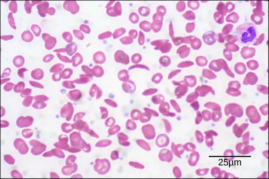
Transport of Carbon Dioxide in the Blood¶
Carbon dioxide molecules are transported in the blood from body tissues to the lungs by one of three methods: dissolution directly into the blood, binding to hemoglobin, or carried as a bicarbonate ion. Several properties of carbon dioxide in the blood affect its transport. First, carbon dioxide is more soluble in blood than oxygen. About 5 to 7 percent of all carbon dioxide is dissolved in the plasma. Second, carbon dioxide can bind to plasma proteins or can enter red blood cells and bind to hemoglobin. This form transports about 10 percent of the carbon dioxide. When carbon dioxide binds to hemoglobin, a molecule called carbaminohemoglobin is formed. Binding of carbon dioxide to hemoglobin is reversible. Therefore, when it reaches the lungs, the carbon dioxide can freely dissociate from the hemoglobin and be expelled from the body.
Third, the majority of carbon dioxide molecules (85 percent) are carried as part of the bicarbonate buffer system. In this system, carbon dioxide diffuses into the red blood cells. Carbonic anhydrase (CA) within the red blood cells quickly converts the carbon dioxide into carbonic acid (H2CO3). Carbonic acid is an unstable intermediate molecule that immediately dissociates into bicarbonate ions \(\text{(HCO}_{3}^{-}\text{)}\) and hydrogen (H+) ions. Since carbon dioxide is quickly converted into bicarbonate ions, this reaction allows for the continued uptake of carbon dioxide into the blood down its concentration gradient. It also results in the production of H+ ions. If too much H+ is produced, it can alter blood pH. However, hemoglobin binds to the free H+ ions and thus limits shifts in pH. The newly synthesized bicarbonate ion is transported out of the red blood cell into the liquid component of the blood in exchange for a chloride ion (Cl-); this is called the chloride shift. When the blood reaches the lungs, the bicarbonate ion is transported back into the red blood cell in exchange for the chloride ion. The H+ ion dissociates from the hemoglobin and binds to the bicarbonate ion. This produces the carbonic acid intermediate, which is converted back into carbon dioxide through the enzymatic action of CA. The carbon dioxide produced is expelled through the lungs during exhalation.
The benefit of the bicarbonate buffer system is that carbon dioxide is “soaked up” into the blood with little change to the pH of the system. This is important because it takes only a small change in the overall pH of the body for severe injury or death to result. The presence of this bicarbonate buffer system also allows for people to travel and live at high altitudes: When the partial pressure of oxygen and carbon dioxide change at high altitudes, the bicarbonate buffer system adjusts to regulate carbon dioxide while maintaining the correct pH in the body.
Carbon Monoxide Poisoning¶
While carbon dioxide can readily associate and dissociate from hemoglobin, other molecules such as carbon monoxide (CO) cannot. Carbon monoxide has a greater affinity for hemoglobin than oxygen. Therefore, when carbon monoxide is present, it binds to hemoglobin preferentially over oxygen. As a result, oxygen cannot bind to hemoglobin, so very little oxygen is transported through the body (Figure 39.22). Carbon monoxide is a colorless, odorless gas and is therefore difficult to detect. It is produced by gas-powered vehicles and tools. Carbon monoxide can cause headaches, confusion, and nausea; long-term exposure can cause brain damage or death. Administering 100 percent (pure) oxygen is the usual treatment for carbon monoxide poisoning. Administration of pure oxygen speeds up the separation of carbon monoxide from hemoglobin.
![Percent oxygen saturation of hemoglobin at an oxygen pressure of 100 millimeters of mercury decreases as percent carbon monoxide increases. In the absence of carbon monoxide, hemoglobin is 98 percent saturated with oxygen. At twenty percent carbon monoxide, hemoglobin is 77 percent saturated with oxygen. At forty percent carbon monoxide, hemoglobin is 68 percent saturated with oxygen. At sixty percent carbon monoxide, hemoglobin is 40 percent saturated with oxygen. At eighty percent carbon monoxide, hemoglobin is 20 percent saturated with oxygen.](img/figure-39-04-04.webp)
Chapter Review¶
Key Terms¶
- alveolar \(\text{P}_{\text{O}_{2}}\)
- partial pressure of oxygen in the alveoli (usually around 100 mm Hg)
- alveolar duct
- duct that extends from the terminal bronchiole to the alveolar sac
- alveolar sac
- structure consisting of two or more alveoli that share a common opening
- alveolar ventilation
- how much air is in the alveoli
- alveolus
- (plural: alveoli) (also, air sac) terminal region of the lung where gas exchange occurs
- anatomical dead space
- (also, anatomical shunt) region of the lung that lacks proper ventilation/perfusion due to an anatomical block
- bicarbonate \(\text{(HCO}_{3}^{-}\text{)}\) ion
- ion created when carbonic acid dissociates into H+ and \(\text{(HCO}_{3}^{-}\text{)}\)
- bicarbonate buffer system
- system in the blood that absorbs carbon dioxide and regulates pH levels
- bronchiole
- airway that extends from the main tertiary bronchi to the alveolar sac
- bronchus
- (plural: bronchi) smaller branch of cartilaginous tissue that stems off of the trachea; air is funneled through the bronchi to the region where gas exchange occurs in alveoli
- carbaminohemoglobin
- molecule that forms when carbon dioxide binds to hemoglobin
- carbonic anhydrase (CA)
- enzyme that catalyzes carbon dioxide and water into carbonic acid
- chloride shift
- exchange of chloride for bicarbonate into or out of the red blood cell
- compliance
- measurement of the elasticity of the lung
- dead space
- area in the lung that lacks proper ventilation or perfusion
- diaphragm
- domed-shaped skeletal muscle located under lungs that separates the thoracic cavity from the abdominal cavity
- elastic recoil
- property of the lung that drives the lung tissue inward
- elastic work
- work conducted by the intercostal muscles, chest wall, and diaphragm
- expiratory reserve volume (ERV)
- amount of additional air that can be exhaled after a normal exhalation
- FEV1/FVC ratio
- ratio of how much air can be forced out of the lung in one second to the total amount that is forced out of the lung; a measurement of lung function that can be used to detect disease states
- flow-resistive
- work of breathing performed by the alveoli and tissues in the lung
- forced expiratory volume (FEV)
- (also, forced vital capacity) measure of how much air can be forced out of the lung from maximal inspiration over a specific amount of time
- functional residual capacity (FRC)
- expiratory reserve volume plus residual volume
- functional vital capacity (FVC)
- amount of air that can be forcibly exhaled after taking the deepest breath possible
- heme group
- centralized iron-containing group that is surrounded by the alpha and beta subunits of hemoglobin
- hemoglobin
- molecule in red blood cells that can bind oxygen, carbon dioxide, and carbon monoxide
- inspiratory capacity (IC)
- tidal volume plus inspiratory reserve volume
- inspiratory reserve volume (IRV)
- amount of additional air that can be inspired after a normal inhalation
- intercostal muscle
- muscle connected to the rib cage that contracts upon inspiration
- intrapleural space
- space between the layers of pleura
- larynx
- voice box, a short passageway connecting the pharynx and the trachea
- lung capacity
- measurement of two or more lung volumes (how much air can be inhaled from the end of an expiration to maximal capacity)
- lung volume
- measurement of air for one lung function (normal inhalation or exhalation)
- mucin
- complex glycoprotein found in mucus
- mucus
- sticky protein-containing fluid secretion in the lung that traps particulate matter to be expelled from the body
- nasal cavity
- opening of the respiratory system to the outside environment
- obstructive disease
- disease (such as emphysema and asthma) that arises from obstruction of the airways; compliance increases in these diseases
- oxygen dissociation curve
- curve depicting the affinity of oxygen for hemoglobin
- oxygen-carrying capacity
- amount of oxygen that can be transported in the blood
- partial pressure
- amount of pressure exerted by one gas within a mixture of gases
- particulate matter
- small particle such as dust, dirt, viral particles, and bacteria that are in the air
- pharynx
- throat; a tube that starts in the internal nares and runs partway down the neck, where it opens into the esophagus and the larynx
- physiological dead space
- (also, physiological shunt) region of the lung that lacks proper ventilation/perfusion due to a physiological change in the lung (like inflammation or edema)
- pleura
- tissue layer that surrounds the lungs and lines the interior of the thoracic cavity
- pleurisy
- painful inflammation of the pleural tissue layers
- primary bronchus
- (also, main bronchus) region of the airway within the lung that attaches to the trachea and bifurcates to each lung where it branches into secondary bronchi
- recruitment
- process of opening airways that normally remain closed when the cardiac output increases
- residual volume (RV)
- amount of air remaining in the lung after a maximal expiration
- resistance
- measurement of lung obstruction
- respiratory bronchiole
- terminal portion of the bronchiole tree that is attached to the terminal bronchioles and alveoli ducts, alveolar sacs, and alveoli
- respiratory distress syndrome
- disease that arises from a deficient amount of surfactant
- respiratory quotient (RQ)
- ratio of carbon dioxide production to each oxygen molecule consumed
- respiratory rate
- number of breaths per minute
- restrictive disease
- disease that results from a restriction and decreased compliance of the alveoli; respiratory distress syndrome and pulmonary fibrosis are examples
- sickle cell anemia
- genetic disorder that affects the shape of red blood cells, and their ability to transport oxygen and move through capillaries
- spirometry
- method to measure lung volumes and to diagnose lung diseases
- surfactant
- detergent-like liquid in the airways that lowers the surface tension of the alveoli to allow for expansion
- terminal bronchiole
- region of bronchiole that attaches to the respiratory bronchioles
- thalassemia
- rare genetic disorder that results in mutation of the alpha or beta subunits of hemoglobin, creating smaller red blood cells with less hemoglobin
- tidal volume (TV)
- amount of air that is inspired and expired during normal breathing
- total lung capacity (TLC)
- sum of the residual volume, expiratory reserve volume, tidal volume, and inspiratory reserve volume
- trachea
- cartilaginous tube that transports air from the larynx to the primary bronchi
- venous \(\text{P}_{\text{CO}_{2}}\)
- partial pressure of carbon dioxide in the veins (40 mm Hg in the pulmonary veins)
- venous \(\text{P}_{\text{O}_{2}}\)
- partial pressure of oxygen in the veins (100 mm Hg in the pulmonary veins)
- ventilation/perfusion (V/Q) mismatch
- region of the lung that lacks proper alveolar ventilation (V) and/or arterial perfusion (Q)
- vital capacity (VC)
- sum of the expiratory reserve volume, tidal volume, and inspiratory reserve volume
Summary¶
39.1 Systems of Gas Exchange¶
Animal respiratory systems are designed to facilitate gas exchange. In mammals, air is warmed and humidified in the nasal cavity. Air then travels down the pharynx, through the trachea, and into the lungs. In the lungs, air passes through the branching bronchi, reaching the respiratory bronchioles, which house the first site of gas exchange. The respiratory bronchioles open into the alveolar ducts, alveolar sacs, and alveoli. Because there are so many alveoli and alveolar sacs in the lung, the surface area for gas exchange is very large. Several protective mechanisms are in place to prevent damage or infection. These include the hair and mucus in the nasal cavity that trap dust, dirt, and other particulate matter before they can enter the system. In the lungs, particles are trapped in a mucus layer and transported via cilia up to the esophageal opening at the top of the trachea to be swallowed.
39.2 Gas Exchange across Respiratory Surfaces¶
The lungs can hold a large volume of air, but they are not usually filled to maximal capacity. Lung volume measurements include tidal volume, expiratory reserve volume, inspiratory reserve volume, and residual volume. The sum of these equals the total lung capacity. Gas movement into or out of the lungs is dependent on the pressure of the gas. Air is a mixture of gases; therefore, the partial pressure of each gas can be calculated to determine how the gas will flow in the lung. The difference between the partial pressure of the gas in the air drives oxygen into the tissues and carbon dioxide out of the body.
39.3 Breathing¶
The structure of the lungs and thoracic cavity control the mechanics of breathing. Upon inspiration, the diaphragm contracts and lowers. The intercostal muscles contract and expand the chest wall outward. The intrapleural pressure drops, the lungs expand, and air is drawn into the airways. When exhaling, the intercostal muscles and diaphragm relax, returning the intrapleural pressure back to the resting state. The lungs recoil and airways close. The air passively exits the lung. There is high surface tension at the air-airway interface in the lung. Surfactant, a mixture of phospholipids and lipoproteins, acts like a detergent in the airways to reduce surface tension and allow for opening of the alveoli.
Breathing and gas exchange are both altered by changes in the compliance and resistance of the lung. If the compliance of the lung decreases, as occurs in restrictive diseases like fibrosis, the airways stiffen and collapse upon exhalation. Air becomes trapped in the lungs, making breathing more difficult. If resistance increases, as happens with asthma or emphysema, the airways become obstructed, trapping air in the lungs and causing breathing to become difficult. Alterations in the ventilation of the airways or perfusion of the arteries can affect gas exchange. These changes in ventilation and perfusion, called V/Q mismatch, can arise from anatomical or physiological changes.
39.4 Transport of Gases in Human Bodily Fluids¶
Hemoglobin is a protein found in red blood cells that is comprised of two alpha and two beta subunits that surround an iron-containing heme group. Oxygen readily binds this heme group. The ability of oxygen to bind increases as more oxygen molecules are bound to heme. Disease states and altered conditions in the body can affect the binding ability of oxygen, and increase or decrease its ability to dissociate from hemoglobin.
Carbon dioxide can be transported through the blood via three methods. It is dissolved directly in the blood, bound to plasma proteins or hemoglobin, or converted into bicarbonate. The majority of carbon dioxide is transported as part of the bicarbonate system. Carbon dioxide diffuses into red blood cells. Inside, carbonic anhydrase converts carbon dioxide into carbonic acid (H2CO3), which is subsequently hydrolyzed into bicarbonate \(\text{(HCO}_{3}^{-}\text{)}\) and H+. The H+ ion binds to hemoglobin in red blood cells, and bicarbonate is transported out of the red blood cells in exchange for a chloride ion. This is called the chloride shift. Bicarbonate leaves the red blood cells and enters the blood plasma. In the lungs, bicarbonate is transported back into the red blood cells in exchange for chloride. The H+ dissociates from hemoglobin and combines with bicarbonate to form carbonic acid with the help of carbonic anhydrase, which further catalyzes the reaction to convert carbonic acid back into carbon dioxide and water. The carbon dioxide is then expelled from the lungs.
Visual Connection Questions¶
39.1 Systems of Gas Exchange¶
1. Figure 39.7 Which of the following statements about the mammalian respiratory system is false?
- When we breathe in, air travels from the pharynx to the trachea.
- The bronchioles branch into bronchi.
- Alveolar ducts connect to alveolar sacs.
- Gas exchange between the lung and blood takes place in the alveolus.
Answer
39.2 Gas Exchange across Respiratory Surfaces¶
2. Figure 39.13 Which of the following statements is false?
- In the tissues, \(\text{P}_{\text{O}_{2}}\) drops as blood passes from the arteries to the veins, while \(\text{P}_{\text{CO}_{2}}\) increases.
- Blood travels from the lungs to the heart to body tissues, then back to the heart, then the lungs.
- Blood travels from the lungs to the heart to body tissues, then back to the lungs, then the heart.
- \(\text{P}_{\text{O}_{2}}\) is higher in air than in the lungs.
Answer
39.4 Transport of Gases in Human Bodily Fluids¶
3. Figure 39.20 The kidneys are responsible for removing excess H+ ions from the blood. If the kidneys fail, what would happen to blood pH and to hemoglobin affinity for oxygen?
Answer
Figure 39.20 The blood pH will drop and hemoglobin affinity for oxygen will decrease.
Review Questions¶
39.1 Systems of Gas Exchange¶
4. The respiratory system ________.
- provides body tissues with oxygen
- provides body tissues with oxygen and carbon dioxide
- establishes how many breaths are taken per minute
- provides the body with carbon dioxide
Answer
A
5. Air is warmed and humidified in the nasal passages. This helps to ________.
- ward off infection
- decrease sensitivity during breathing
- prevent damage to the lungs
- all of the above
Answer
C
6. Which is the order of airflow during inhalation?
- nasal cavity, trachea, larynx, bronchi, bronchioles, alveoli
- nasal cavity, larynx, trachea, bronchi, bronchioles, alveoli
- nasal cavity, larynx, trachea, bronchioles, bronchi, alveoli
- nasal cavity, trachea, larynx, bronchioles, bronchi, alveoli
Answer
B
39.2 Gas Exchange across Respiratory Surfaces¶
7. The inspiratory reserve volume measures the ________.
- amount of air remaining in the lungs after a maximal exhalation
- amount of air that the lungs holds
- amount of air that can be further exhaled after a normal breath
- amount of air that can be further inhaled after a normal breath
Answer
D
8. Of the following, which does not explain why the partial pressure of oxygen is lower in the lung than in the external air?
- Air in the lung is humidified; therefore, water vapor pressure alters the pressure.
- Carbon dioxide mixes with oxygen.
- Oxygen is moved into the blood and is headed to the tissues.
- Lungs exert a pressure on the air to reduce the oxygen pressure.
Answer
D
9. The total lung capacity is calculated using which of the following formulas?
- residual volume + tidal volume + inspiratory reserve volume
- residual volume + expiratory reserve volume + inspiratory reserve volume
- expiratory reserve volume + tidal volume + inspiratory reserve volume
- residual volume + expiratory reserve volume + tidal volume + inspiratory reserve volume
Answer
D
39.3 Breathing¶
10. How would paralysis of the diaphragm alter inspiration?
- It would prevent contraction of the intercostal muscles.
- It would prevent inhalation because the intrapleural pressure would not change.
- It would decrease the intrapleural pressure and allow more air to enter the lungs.
- It would slow expiration because the lung would not relax.
Answer
B
11. Restrictive airway diseases ________.
- increase the compliance of the lung
- decrease the compliance of the lung
- increase the lung volume
- decrease the work of breathing
Answer
B
12. Alveolar ventilation remains constant when ________.
- the respiratory rate is increased while the volume of air per breath is decreased
- the respiratory rate and the volume of air per breath are increased
- the respiratory rate is decreased while increasing the volume per breath
- both a and c
Answer
D
39.4 Transport of Gases in Human Bodily Fluids¶
13. Which of the following will NOT facilitate the transfer of oxygen to tissues?
- decreased body temperature
- decreased pH of the blood
- increased carbon dioxide
- increased exercise
Answer
A
14. The majority of carbon dioxide in the blood is transported by ________.
- binding to hemoglobin
- dissolution in the blood
- conversion to bicarbonate
- binding to plasma proteins
Answer
C
15. The majority of oxygen in the blood is transported by ________.
- dissolution in the blood
- being carried as bicarbonate ions
- binding to blood plasma
- binding to hemoglobin
Answer
D
Critical Thinking Questions¶
39.1 Systems of Gas Exchange¶
16. Describe the function of these terms and describe where they are located: main bronchus, trachea, alveoli, and acinus.
Answer
The main bronchus is the conduit in the lung that funnels air to the airways where gas exchange occurs. The main bronchus attaches the lungs to the very end of the trachea where it bifurcates. The trachea is the cartilaginous structure that extends from the pharynx to the primary bronchi. It serves to funnel air to the lungs. The alveoli are the sites of gas exchange; they are located at the terminal regions of the lung and are attached to the respiratory bronchioles. The acinus is the structure in the lung where gas exchange occurs.
17. How does the structure of alveoli maximize gas exchange?
Answer
The sac-like structure of the alveoli increases their surface area. In addition, the alveoli are made of thin-walled parenchymal cells. These features allow gases to easily diffuse across the cells.
39.2 Gas Exchange across Respiratory Surfaces¶
18. What does FEV1/FVC measure? What factors may affect FEV1/FVC?
Answer
FEV1/FVC measures the forced expiratory volume in one second in relation to the total forced vital capacity (the total amount of air that is exhaled from the lung from a maximal inhalation). This ratio changes with alterations in lung function that arise from diseases such as fibrosis, asthma, and COPD.
19. What is the reason for having residual volume in the lung?
Answer
If all the air in the lung were exhaled, then opening the alveoli for the next inspiration would be very difficult. This is because the tissues would stick together.
20. How can a decrease in the percent of oxygen in the air affect the movement of oxygen in the body?
Answer
Oxygen moves from the lung to the bloodstream to the tissues according to the pressure gradient. This is measured as the partial pressure of oxygen. If the amount of oxygen drops in the inspired air, there would be reduced partial pressure. This would decrease the driving force that moves the oxygen into the blood and into the tissues. \(\text{P}_{\text{O}_{2}}\) is also reduced at high elevations: \(\text{P}_{\text{O}_{2}}\) at high elevations is lower than at sea level because the total atmospheric pressure is less than atmospheric pressure at sea level.
21. If a patient has increased resistance in their lungs, how can this be detected by a doctor? What does this mean?
Answer
A doctor can detect a restrictive disease using spirometry. By detecting the rate at which air can be expelled from the lung, a diagnosis of fibrosis or another restrictive disease can be made.
39.3 Breathing¶
22. How would increased airway resistance affect intrapleural pressure during inhalation?
Answer
Increased airway resistance increases the volume and pressure in the lung; therefore, the intrapleural pressure would be less negative and breathing would be more difficult.
23. Explain how a puncture to the thoracic cavity (from a knife wound, for instance) could alter the ability to inhale.
Answer
A puncture to the thoracic cavity would equalize the pressure inside the thoracic cavity to the outside environment. For the lung to function properly, the intrapleural pressure must be negative. This is caused by the contraction of the diaphragm pulling the lungs down and drawing air into the lungs.
24. When someone is standing, gravity stretches the bottom of the lung down toward the floor to a greater extent than the top of the lung. What implication could this have on the flow of air in the lungs? Where does gas exchange occur in the lungs?
Answer
The lung is particularly susceptible to changes in the magnitude and direction of gravitational forces. When someone is standing or sitting upright, the pleural pressure gradient leads to increased ventilation further down in the lung.
39.4 Transport of Gases in Human Bodily Fluids¶
25. What would happen if no carbonic anhydrase were present in red blood cells?
Answer
Without carbonic anhydrase, carbon dioxide would not be hydrolyzed into carbonic acid or bicarbonate. Therefore, very little carbon dioxide (only 15 percent) would be transported in the blood away from the tissues.
26. How does the administration of 100 percent oxygen save a patient from carbon monoxide poisoning? Why wouldn’t giving carbon dioxide work?
Answer
Carbon monoxide has a higher affinity for hemoglobin than oxygen. This means that carbon monoxide will preferentially bind to hemoglobin over oxygen. Administration of 100 percent oxygen is an effective therapy because at that concentration, oxygen will displace the carbon monoxide from the hemoglobin.
Adapted from Biology 2e by OpenStax, licensed under CC BY 4.0. Access the original for free at openstax.org. Changes: converted to the web reading format of The Open Book Project.